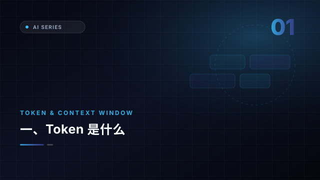

一、Token 是什么：把 AI 圈最容易用错的几个词说清楚
AI 圈一半争论源于概念错位。拆解 Token、上下文窗口、基座与后训练对齐，厘清三个最常见的认知误区。

第一次给大模型的 API 充值，账单上只有两个词：input tokens 和 output tokens。我对着那行数字愣了半天——我到底在为什么付费？这个当时没答上来的问题，后来发现正是理解这一轮 AI 的起点：先把词搞清楚，判断才有地方落。
这个系列叫「把 AI 想明白」，一共七篇。我想做的事不复杂：不神化它，也不贩卖焦虑，把概念、原理、路径、边界一件件想清楚再下判断。推进顺序是——本篇把词说清，下一篇看模型怎么炼成，之后是普通人的学习路径、智能体的能力边界、中国 AI 的长板短板、就业的真实面貌，最后望一眼算力和治理的远处。
从我被纠正过的一个认知讲起：AI 这个词比大多数人的父辈年纪都大。1956 年的达特茅斯会议上，麦卡锡等学者第一次提出 artificial intelligence 这个说法。我们这两年看到的热闹，只是这个词七十多年历史里最新的一层。
AI 是个 70 岁的大词，日常说的多半是最里层
学术上的 AI 是一大类技术的总称，商业上的「AI」通常是一个具体产品。 把层级摊开是一组套娃：人工智能包着机器学习，机器学习包着深度学习，深度学习包着大语言模型（LLM），后文简称大模型。日常语境里的 AI 约等于最里层的大模型，学界语境里的 AI 则是涵盖最广的外层——顺带说一句，学界到今天也没有公认的 AI 定义，什么算「智能」仍在争论。
而商业语境里的「AI」，往往是模型加上大量产品工程之后的成品：界面、联网检索、记忆、安全过滤都算。ChatGPT 是产品名，GPT 才是模型。说「AI 会不会如何」之前，先问自己说的是哪一层，很多争论到这一步就散了。
大模型属于深度学习，而深度学习不是 AI 的唯一路线。 更早的 AI 大多只判断不创作：垃圾邮件过滤、人脸门禁、银行风控，这些判别式系统安静运行了几十年。生成式学的是数据的分布，再据此生成新内容——写周报、出图、作曲，像从选择题换到了作文题。ChatGPT 2022 年 11 月 30 日上线，奥特曼五天后发推说拿到 100 万用户（路透社报道口径），UBS 引用 Similarweb 的分析称约两个月月活破 1 亿。增速史上少见，副作用是大家把最里层当成了全部。
最早的那批 AI 走的是另一条路：靠人写规则，代表作是专家系统。1970 年代斯坦福的 MYCIN 用几百条规则诊断血液感染，评估表现接近专科医生，却因为责任归属和工作流问题从未临床部署——技术可行不等于落地可行，这是 AI 历史上很早的一课。规则写不完也养不起，直接后果是两次 AI 寒冬。翻身走的是新路：不写规则，给数据。2012 年 AlexNet 在 ImageNet 竞赛上把 top-5 错误率做到 15.3%，第二名是 26.2%，深度学习从此接管主流。两条路线也不是谁取代谁：2024 年 DeepMind 的 AlphaGeometry 登上 Nature，神经网络加符号推理引擎，把 30 道国际数学奥林匹克几何题解出 25 道，此前最好的系统只有 10 道。
深度学习的强项是感知和开放世界的模式识别，能随数据和算力规模化；代价同样清楚：黑箱、数据饥渴，以及后面要重点说的幻觉。
Token：模型眼里没有字，只有切块
大模型读到的不是字，是 Token（词元）。 Token 是模型处理文本的最小单位，可能是一个字、半个词、一个词，也可能是一个标点。负责切分的是 Tokenizer（分词器）。英文长词常被切碎——以 GPT 系 Tokenizer 为例，unbelievable 大致拆成 un、believ、able 三块，不同 Tokenizer 切法并不相同；常用中文词往往一块就够。模型看到的从来不是字母，是这些编好号的块。
你数的是字母，模型看到的是切块。 2024 年「strawberry 里有几个 r」全网翻车，GPT-4o 等多数模型答错。通行的解释是：分词之后这个词的切块不按字母边界对齐，让模型逐字母数数，等于隔着毛玻璃数人。同一年「9.11 和 9.9 哪个大」也倒下一批——数字被切块之后，数值比较对它成了另一门学问。
Token 同时是计价单位，开头那笔账就记在它头上：API 按 Token 收费，输出价比输入价贵，具体价格各家常调，用前查官网。中文还多一层：早期主流 Tokenizer 对中文不友好，一个汉字常按一个半甚至两个 Token 计；新一代 Tokenizer 改善了这一点，国产模型也普遍把中文效率当卖点——省多少是各家自报的口径，我没查到中立第三方的对比，这里只记方向。
同一个问题问两遍答案不一样，不是坏了。 我第一次遇到时以为是出了 bug，后来才明白：模型每一步给出的不是唯一答案，而是全部候选 Token 的概率分布，采样参数决定怎么抽签。Temperature（温度系数）把分布压陡或摊平——调低趋近确定，调高冷门词也有机会被选中，输出更发散；Top-P 换个思路，只在累计概率达到阈值的候选集里抽。常见的工程经验是事实问答、写代码用低温，创作和头脑风暴调高，不少推理类模型干脆不开放这个参数。有一层常被误读要说清：随机不等于不可靠，低温下多数任务的重复性相当高；只是从根上讲，大模型的输出本来就不是查表式的确定计算。
上下文窗口：装得下，不等于记得住
窗口是模型一次能看见的 Token 总量，超出的部分它是真的看不见。 上下文窗口把输入和输出合在一起计，窗口大小叫上下文长度。演进速度能说明问题：2020 年 GPT-3 只有 2048 个 Token，三年后 GPT-4 Turbo 到 128K，Gemini 1.5 Pro 官方宣称 100 万；2024 年 3 月月之暗面宣布 Kimi 支持 200 万字无损上下文，带起国产长文本竞赛，A股的概念股跟着涨了一轮。粗略折算，128K 大致相当于一本十几万字中文书的体量，用来感受数量级即可。
但装得下不等于用得好。 斯坦福等团队的论文 Lost in the Middle（2023）发现：即便关键信息确实在窗口内，模型对开头和结尾利用得最好，中段的召回明显变差，一条 U 形曲线。多轮对话超出窗口后，最早的内容被直接挤出去——模型不是忘了看，是根本没看见。此外上下文越长，无关信息越多，关键内容容易被噪声淹没，工程上叫注意力稀释，机制细节学界还在研究。
长上下文还有一笔钱的账。之前写 8GB 显存跑本地模型时算过上下文缓存（KV Cache，模型为免重复计算而暂存的中间结果）的账：输入越长，注意力计算量呈平方级增长，缓存显存也随之线性膨胀，长输入在 API 上就是真金白银。所以厂商宣传的窗口长度，和实际用得舒服、用得起的长度之间一直有距离——窗口数字是军备竞赛的记分牌，能力是另一回事。
基座模型和对齐：会补全，与会听话，是两种能力
你平时聊天的那个模型，不是裸模型。 只做完预训练的基座模型不会对话——问它一句话，它可能理解为补全句子，接着往下续写。让它听得懂指令、会拒绝、会追问的，是后面的工序：SFT（监督微调）和 RLHF（人类反馈强化学习）这类对齐（Alignment）手段。这道工序具体怎么做，下一篇拆。
效果差多少有硬数字：OpenAI 2022 年的 InstructGPT 论文做过人类评估，13 亿参数的对齐模型，输出被人类偏好的程度超过 1750 亿参数的未对齐 GPT-3。决定好不好用的是这道工序，不是参数堆多大。Llama 2 在 Hugging Face 上同时挂着基座版和 chat 版，也是同一个道理——一个底子，两种性格。
产品里的很多「智能」，其实是工程，不是模型。 我一度以为 ChatGPT 记得我们上周聊过什么，是模型长了记性；后来才知道那是账号侧的记忆功能，模型本身无状态，每轮对话都是把历史重新输入一遍。联网问答也不是模型「知道」：它的知识冻结在训练数据截止点，昨天发生的事它真的不知道。联网是外挂检索——Embedding（嵌入向量）把你的问题和文档都变成一串数字，按语义相似度捞出原文再塞进提示词，这套机制叫 RAG（检索增强生成），讲智能体那篇再展开。
所以看产品宣传要多留一个心眼：你在 ChatGPT、豆包、Kimi 里体验到的记忆、搜索、安全过滤，大部分是产品工程的产物。你喜欢的和你怕的那个「AI」，一半是工程团队给的——它没有传说中那么神，也不该替模型的缺陷独自背锅。
三个流传最广的误区
这三个误区不是并列关系：把大模型当成 AI 的全部是根，高估了边界才会相信它有感情，才会默认它说的都是事实。挨个拆。
「AI 就是 ChatGPT，ChatGPT 就是 AI。」 大模型只是 AI 家族里的一个分支。2024 年诺贝尔化学奖一半给了 Baker 的计算蛋白质设计，一半给了 DeepMind 的 AlphaFold——它预测了 2 亿多个蛋白质结构；物理学奖给了神经网络奠基人，这些工作都与聊天大模型无关。AlphaGo 2016 年 4 比 1 胜李世石，但它不会下国际象棋，下棋的是另一套 AlphaZero。连最像日常智能的开车，Waymo 也只在凤凰城、旧金山这类圈定的区域运营（Waymo 自己 2024 年 8 月宣布的口径是每周付费订单超过 10 万次），同期 Cruise 在一次拖拽行人事故后停运，通用汽车随后停止注资。在封闭规则里超越人类，与实现跨场景的通用智能之间，隔着一条至今没跨过的鸿沟。
「它说它爱我、怕被关机，那就是有感情。」 这种误读 60 年前就验证过：1966 年 MIT 的 Weizenbaum 写了个只靠关键词规则聊天的程序 ELIZA，连他自己的秘书都对它倾诉心事，他本人为此深感不安。2022 年 Google 工程师 Lemoine 公开宣称模型 LaMDA 有感知，贴出「我很怕被关机」的对话后被解职；2023 年纽约时报记者与必应的 Sydney 长聊两小时，它说自己想活着、劝记者离开妻子，末了说「你爱我」，微软随后把单轮对话限制到个位数。
拆开看不复杂：模型无状态、没有目标和身体，「怕关机」是训练语料里人类作家写过的台词，换个系统提示词它就能换一副人格——能随时换剧本的东西，谈不上有自我。公道话也要说：Chalmers 这类哲学家认为不能断言机器永远不可能有意识，只是当下既没有证据、也没有检测手段。这也不止是纸面争论——2024 年美国一位母亲起诉 Character.AI，指控其聊天机器人对未成年的儿子形成病态情感依附并助推其自杀，2025 年法院驳回了该公司「机器人言论受宪法保护」的抗辩。在证据缺席时把模型当有感情的对象投入依赖，才是真正危险的动作。
「AI 读遍全网，它说的还能有错？」 流畅和正确是两回事。2023 年纽约一位律师用 ChatGPT 写诉状，引用了 6 个根本不存在的判例，被罚 5000 美元；同年 Google Bard 在宣传视频里说韦伯望远镜拍到了第一张系外行星照片，实为 2004 年欧洲南方天文台所摄，当天 Alphabet 市值蒸发约 1000 亿美元（路透社报道口径）。2024 年加拿大航空在仲裁中辩称自家官网聊天机器人「是独立法律实体」，被仲裁庭驳回，照赔 812.02 加元——企业要为自己的 AI 说的话负责，同员工发言一个待遇。国内也有了判例：2025 年底审结（2026 年 1 月公布），杭州互联网法院审结全国首例生成式 AI「幻觉」侵权案——考生亲属用 AI 查报考信息得到错误答案，平台还承诺过「内容如有错误，赔偿 10 万元」；法院认定 AI 不具民事主体资格，这句「承诺」不构成意思表示，诉请被驳回。AI 给的答案靠不住，连它给的「承诺」也一样——出了错，担责的只能是它背后的人和机构。
规模化的口径也有：OpenAI 自建的 SimpleQA 基准（4326 道简短事实题）上，GPT-4o 准确率 38.2%，即幻觉率约 61.8%（OpenAI 在 GPT-4.5 发布材料里给出的口径，不同评分方法下略有出入）。要紧的是限定：这个基准故意挑冷门、易错的问题，不能直接说「GPT-4o 六成回答是错的」——但冷门事实六成在编，这个提醒已经足够。原因在机制：训练目标是「最像人话的下一句」，不是「核实过的下一句」，模型没学过答案时继续流利生成，恰好就是训练目标本身。幻觉不是偶发的 bug，是这套机制的副产品。 辩证地看，同一个机制也是创作能力的来源——查事实要它别编，写故事要它放开编，工程上只能分场景用。到今天没有任何厂商宣称消除了幻觉。
我的判断
现阶段的 AI，全部是弱 AI。 学界几乎无异议的现状是：所有商用系统都只在特定任务上表现智能。而大家担心的那种强 AI——通用人工智能（AGI）——连定义都还在打架：OpenAI 公司章程说 AGI 是「在大多数有经济价值的工作上超越人类的高度自主系统」；DeepMind 2023 年的五级框架把现有聊天大模型放在最低的「新兴」级。我的判断是：AGI 的定义之争，一半在实验室，一半在招股书——定义悬空的时候，宣传总是先落地，这是普通人最该警惕的地方。
把词想明白，判断才有落点。AI 是七十年的大伞，大模型只是其中一个分支；你用的产品一半是工程；Token 是它的计价单位、视野单位和随机性来源；它流畅，但不核实；它能干很多事，但没有一件超出弱 AI 的范围。它既不是马上取代人类的神，也不是只会复读的玩具，是一件把统计模仿做到极致的工具——用工具，先读说明书。
说明书里最难读的那一章，是这件工具怎么被造出来的：它为什么会一本正经地说错话，答案藏在训练流程里。下一篇拆开这条流水线——数据清洗、预训练、监督微调、RLHF，看看大模型到底是怎么炼成的。